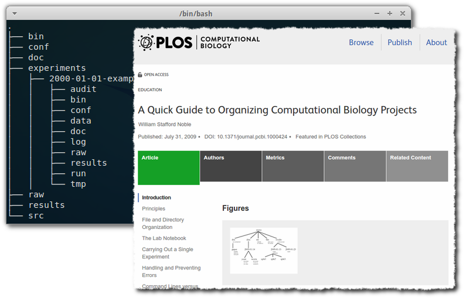

A few thoughts on organizing computational (biology) projects

I read this excellent article with practical recommendations on how to organize a computational project, in terms of directory structure.
Directory structure matters
The importance of a good directory structure seems to often be overlooked in teaching about computational biology, but can be the difference between a successful project, and one where every change or re-run of some part of a workflow, will require days of manual fiddling to get hand on the right data, in the right format, in the right place, with the right version of the workflow, with the right parameters, and then succeed to run it without errors.
Identify static and moving parts of your code and config
Among the many good ideas in the article I especially liked the ones about:
- Starting a new date-tagged directory for each new experiment
(neither just each run, nor let all files be in the same directory)
- (So you would have something like an “experiments” folder, with subfolders with names like “2000-01-01”, or “2000-01-01-this-and-that-experiment”)
- Including a summarizing “runall” driver script in each such folder, that will reproduce the results of that experiment
This lead me to realize something else that has bugged me for a long time, based on troubles we had with our project setup, but which I wasn’t clear about before:
- It is super-important to keep track of what parts of your code (component code, workflow code, run configuraitons and “run scripts”), that change between experiments, and which do not. And following this:
- The parts that change even the slightest between experiments, should not go under any project-wide directory structure, but should instead be copied between each experiment folder, so that each experiment is fully self-contained.
In our own project for example, some things that we assumed would be static, such as workflow definitions (we thought that just the parameters, config and run scripts would change), will actually change. Sometimes a little, and sometimes a lot.
Thus, I’m quite sure that our next step, after a re-organization we’re doing now, will include a full copy of the workflow definition in each experiment folder.
I’m sure this is different for each project though, depending on where you are on the “production pipeline vs explorative experimentation workflow” - scale. In our case, we assumed we were closer to a “production pipeline” than we actually were, and that caused us a lot of trouble.
A tentative project directory structure
Apart from the realization above, I’ve also been sketching on a new directory structure, heavily inspired from the paper, with some additions from our own experience.
So, this is what I think I would like a project directory structure to look like right now:
├── bin <-------------------# Binary files and executables (jar files & proj-wide scripts etc)
├── cfg <--------------------# Project-wide configuraiotn
├── doc <-------------------# Any documents, such as manuscripts being written
├── exp <-------------------# The main experiments folder
│ ├── 2000-01-01-example <-# An example Experiment
│ │ ├── audit <---------# Audit logs from workflow runs (higher level than normal logs)
│ │ ├── bin <----------# Experiment-specific executables and scripts
│ │ ├── cfg <-----------# Experiment-specific config
│ │ ├── dat <-----------# Any data generated by workflows
│ │ ├── doc <----------# Experiment-specific documents
│ │ ├── log <----------# Log files from workflow runs (lower level than audit logs)
│ │ ├── raw <----------# Raw-data to be used in the experiment (not to be changed)
│ │ ├── res <-----------# Results from workflow runs
│ │ ├── run <----------# All files rel to running experiment: Workflows, conf, scripts ...
│ │ └── tmp <----------# Any temporary files not supposed to be saved
├── raw <-------------------# Project-wide raw data
├── res <-------------------# Project-wide results
└── src <-------------------# Project-wide source code (that needs to be compiled)
We’ll see how many changes this will get when putting it into practice :) But in the meanwhile, feedback and ideas are of course welcome as early as possible.
- EDIT 21 March 2019: More consistent use of three-letter folder names, when applicable.